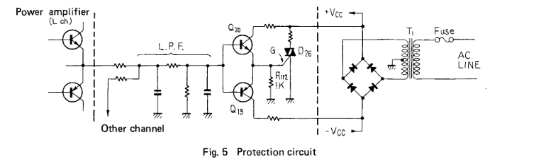
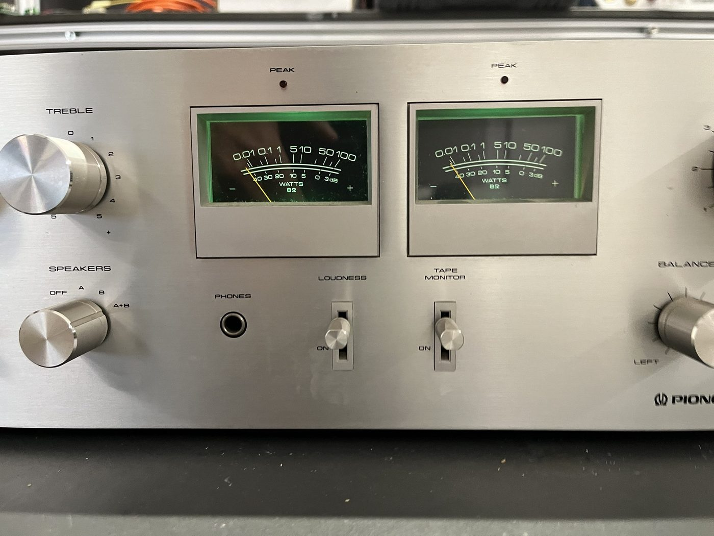
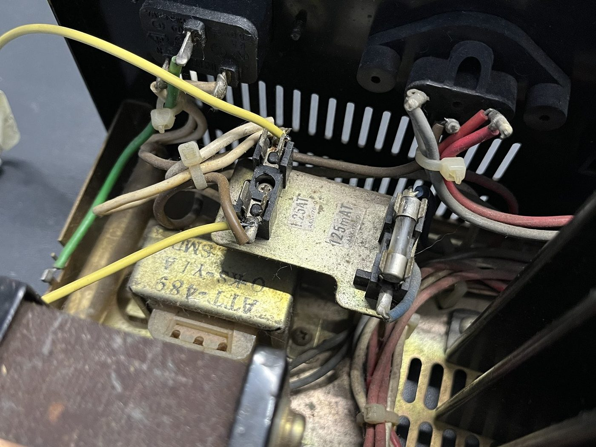
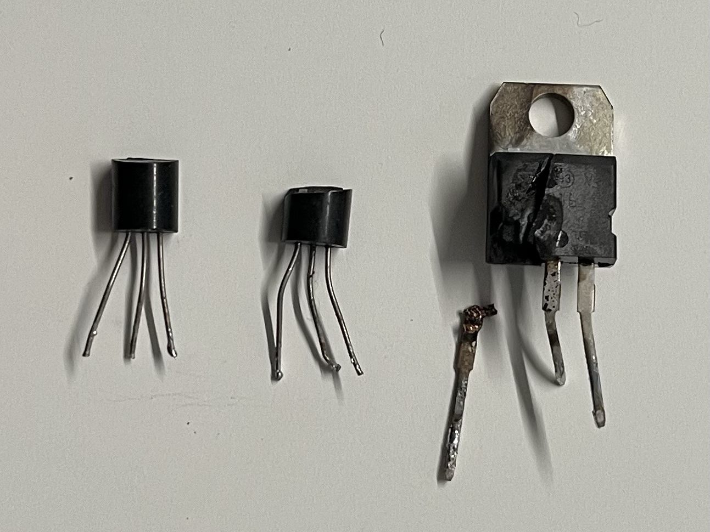

Bozza. Le parti evidenziate sono da compilare con i dati reali della riparazione.
Scheda n. NNNN
Amplificatore
Questo oggetto è stato riparato a mano invece di essere sostituito. Qui c’è scritto cosa aveva, cosa è stato fatto e da chi.
- Esito
- Riparato
- Marca
- Pioneer
- Modello
- SA-606
- Anno di produzione
- anno
- Lavoro concluso il
- 16 novembre 2026
- Ore di lavoro
- ore
- Riparato da
- nomi
La storia dell’oggetto
Due o tre frasi: di chi è, da quanto tempo lo usa, perché valeva la pena provarci invece di sostituirlo.
Il lavoro, passo per passo
-
Il guasto
L’amplificatore non funzionava: con le casse collegate non usciva alcun suono.
-
La diagnosi
Guardando il circuito abbiamo visto un componente di potenza esploso. Sembrava un transistor, invece era un triac. Anche un secondo transistor, più piccolo, era rotto.
Con lo schema elettrico abbiamo capito che fanno parte del circuito che protegge le casse. Secondo il manuale, se all’uscita compare una tensione continua di ±8 V, il triac D26 mette in corto l’alimentazione e il fusibile sul primario del trasformatore brucia entro 2 secondi. Qui invece si sono rotti i componenti della protezione. Forse anche perché il fusibile montato era da 2 A invece che da 1,25 A, come previsto.

Il circuito di protezione (Fig. 5 del manuale di servizio Pioneer SA-606) -
L’intervento
Abbiamo tolto Q19, Q20 e D26, e l’amplificatore ha ripreso a funzionare. Il guasto quindi era nella protezione. Poi abbiamo montato componenti nuovi al loro posto e un fusibile da 1,25 A.
La prima volta abbiamo montato il triac con i terminali invertiti, pensando che fossero equivalenti. Non lo sono: lo abbiamo rimontato nel verso giusto.
-
La prova
In una delle accensioni dopo la sostituzione, il condensatore di filtro sull’ingresso di rete a 220 V (10 nF) è andato in cortocircuito e il fusibile è bruciato. Abbiamo sostituito il condensatore e il fusibile.
Con i componenti nuovi l’amplificatore funziona ancora. Sulle quattro uscite per gli altoparlanti la tensione continua è di pochi millivolt, molto lontana dagli 8 V che fanno intervenire la protezione.

Componenti sostituiti
| Riferimento | Componente | Montato |
|---|---|---|
| D26 | Triac del circuito di protezione, BCR3AM-4 | BT137-600E.127 |
| Q19 | Transistor del circuito di protezione, 2SA904A-G | KSA992FTA |
| Q20 | Transistor del circuito di protezione, 2SC1914A-G | KSC1845FTA |
| C1 | Condensatore di filtro sull’ingresso di rete, a disco, 10 nF 250 V AC (sigla 103Z), andato in corto | Condensatore di sicurezza X2, 10 nF: tensione e sigla |
| Fusibile | Primario del trasformatore, era da 2 A | 1,25 A ritardato, il valore scritto sul telaio (1.25AT) |
Verifiche di sicurezza
- Tensione continua sulle quattro uscite per gli altoparlantipochi mV
- Funzionamento con tensione di rete, dopo la sostituzionefunziona
- Fusibile sul primario del trasformatore1,25 A ritardato, come scritto sul telaio
- Resistenza di isolamentonon eseguita
- Intervento della protezione con tensione continua all’uscitanon eseguita
Cosa non è stato fatto
Non sappiamo con certezza perché si sono rotti i componenti della protezione invece del fusibile. Il fusibile da 2 A è la spiegazione più probabile, ma è un’ipotesi.
Non abbiamo misurato la resistenza di isolamento. La sicurezza è stata verificata solo con la prova sotto tensione e con la misura della tensione continua sulle uscite.
Non abbiamo provato l’intervento della protezione con i componenti nuovi: non abbiamo messo una tensione continua sull’uscita per vedere se il fusibile brucia entro 2 secondi.
Questa è una riparazione volontaria e gratuita, fatta con cura ma senza garanzia. Se l’oggetto smette di funzionare, la scheda aiuta chi ci metterà mano dopo di noi.
Foto









Cosa si è evitato
- Rifiuti elettronici non prodotti
- kg
- Emissioni di CO₂ evitate (stima)
- kg
Il peso è quello dell’oggetto, misurato. Le emissioni sono una stima calcolata con il metodo del Fixometer di The Restart Project, non una misura.
L’etichetta sull’oggetto
Il codice porta a questa pagina. Il numero è scritto anche in chiaro, così la scheda si trova pure se il codice si rovina.
Dati aperti
Gli stessi dati in formato Open Repair Data Standard, per chi studia la riparabilità dei prodotti.
Mostra il record
{
"id": "NNNN",
"data_provider": "12042",
"country": "ITA",
"partner_product_category": "Amplificatore",
"product_category": "DA COMPILARE (dall’elenco ORDS)",
"brand": "Pioneer",
"year_of_manufacture": "DA COMPILARE",
"problem": "Nessun suono. Circuito di protezione delle uscite guasto: triac D26 esploso, transistor Q19 e Q20 rotti, fusibile primario da 2 A invece di 1,25 A. Durante le prove è andato in corto anche il condensatore di filtro sull’ingresso di rete.",
"repair_status": "Fixed",
"repair_barrier_if_end_of_life": "",
"group_identifier": "12042-bra",
"event_date": "2026-11-16"
}